메모리는 무엇이고, 왜 예측일까요
컨텍스트가 100만 토큰이면 지난 대화와 문서, 히스토리를 전부 넣으면 되지 않을까요. 앤트로픽이 2026년 11월 6일에 낸 연구 글 「에이전트 메모리의 구성 요소」는 정반대 결과를 보여 줘요. 영상은 이 글을 처음부터 끝까지 따라가요.
메모리가 아닌 것 세 가지
에이전트 메모리라고 하면 사람마다 떠올리는 게 달라요. 그래서 앤트로픽은 메모리가 아닌 것부터 빼고 시작해요. 첫째는 모델 가중치를 바꾸는 일, 즉 사전 학습이나 파인튜닝으로 지식을 모델 안에 새기는 거예요. 둘째는 인컨텍스트 러닝이에요. 대화 하나 안에서 알게 된 정보라 세션이 끝나면 같이 사라져요. 셋째는 컴팩션이에요. Claude Code에서 대화가 길어지면 자동으로 일어나는 그 요약이에요.
아래 그림에서 회색 세 칸을 빼고 남는 오른쪽 칸이 에이전트 메모리예요. 작업하며 얻은 경험을 세션이 끝난 뒤에도 남기고, 다음 세션이 다시 읽을 수 있게 파일·폴더·데이터베이스에 저장하는 것이에요.
메모리는 미래에 대한 예측이에요
글은 사람의 뇌에서 출발해요. 해마가 겪은 일을 빠르게 기록하지만, 그게 다 장기 기억이 되지는 않아요. 자거나 쉬는 동안 최근 경험을 다시 재생하고, 그중 일부만 신피질로 넘겨요. 에이전트도 작업 중에는 로그와 대화 기록을 쌓고, 나중에 그 기록을 훑어 정리하는 단계를 따로 둘 수 있어요.
문제는 작업하는 순간엔 뭐가 중요할지 모른다는 점이에요. 그래서 앤트로픽은 메모리를 미래에 대한 예측이라고 불러요. 규칙 하나를 적는 건 그 패턴이 다시 쓰일 거라는 예측이에요. 확인한 사실을 적는 건 다음 세션이 다시 확인하지 않고 믿고 쓸 거라는 예측이고요. 예측이 맞으면 다음 세션이 토큰과 시간을 아껴요. 틀리면 다음 세션은 틀린 걸 믿고 출발해요.
실패에서 규칙을 만드는 모델
이 예측 실력을 앤트로픽은 먼저 지속 학습 벤치마크 CL-Bench 1.0의 데이터베이스 과제로 쟀어요. 질문에 답하면 정답을 알려 주고 메모를 남길 기회를 줘요. 매 질문은 새 세션에서 시작하고, 메모 폴더 하나만 다음 세션으로 넘어가요. 모델마다 메모 폴더에 남긴 게 달랐어요.
| 모델 | 메모 폴더에 남긴 것 |
|---|---|
| Sonnet 4.6 | 틀린 이유에 대한 추측까지만. 검증 안 된 추측을 나열한 파일이 흩어져 있었어요 |
| Opus 4.7 | 메모를 문서 하나로 모으고, 확인한 사실과 아직 모르는 걸 나누기 시작했어요 |
| Sonnet 5 | 채점이 끝난 답엔 확인 표시, 틀린 답엔 정정을 적었어요 |
| Opus 5 | 처음으로 고리를 닫았어요. 메모마다 규칙, 그 규칙이 맞는 근거, 이미 밟은 함정에 대한 경고가 있었어요 |
'고리를 닫았다'는 말은 아래 슬라이드의 네 칸이 한 바퀴 돌았다는 뜻이에요. 틀린다, 이유를 세운다, 검증한다, 그리고 맨 오른쪽 검은 칸처럼 규칙으로 남긴다. Opus 5.5와 Sonnet 5.5도 같은 방식으로 고리를 닫았어요.
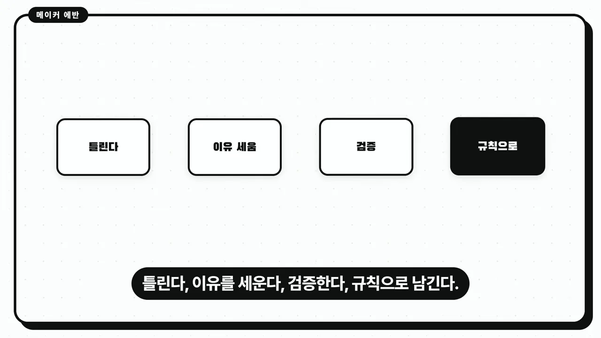
포켓몬 실험: 많이 적은 쪽이 졌어요
포켓몬스터 레드는 긴 시간 목표를 쫓아야 하는 게임이라, 무엇을 기억할지 판단력을 보기 좋아요. 앤트로픽은 모델마다 읽고 쓸 수 있는 메모 폴더를 하나씩 주고, 약 1만 스텝쯤 진행됐을 때 폴더를 열어 봤어요.
파일 413개와 9개
아래 슬라이드는 원문 그림을 옮긴 거예요. 왼쪽을 거의 다 채운 주황·회색 칸들이 Sonnet 3.7의 메모 폴더이고, 오른쪽 위 작은 칸이 Fable 5의 폴더예요. 크기 차이가 그대로 보여요.
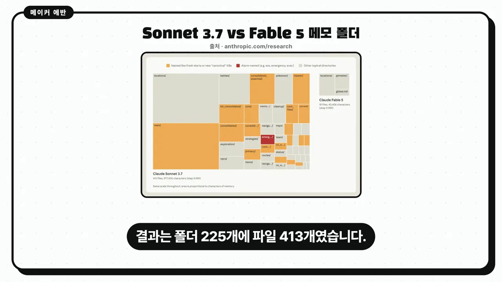
숫자로 보면 더 분명해요. Sonnet 3.7은 폴더 225개에 파일 413개를 쓰고 배지 1개를 땄어요. Fable 5는 폴더 2개에 파일 9개, 맨 위에 global.md 하나를 두고 배지 4개를 땄어요.
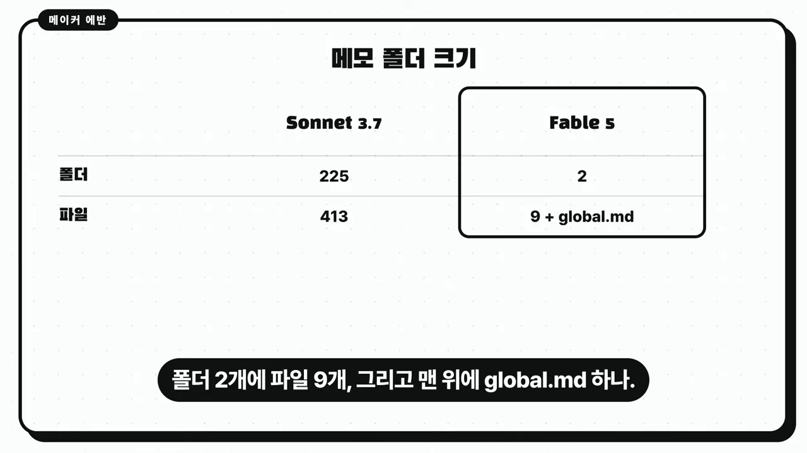
Sonnet 3.7이 진 이유는 포켓몬의 게임 상태가 계속 바뀐다는 데 있어요. 적어 둔 기록이 몇 걸음 만에 낡은 정보가 돼요. 진행할수록 게임보다 메모를 뒤지는 데 시간을 더 썼어요. 1만 스텝 근처에서는 네 번째 '마스터 메모 폴더'를 만들었고, 그 뒤 17스텝 동안 파일 6개를 만들고 9개를 지우면서 게임 조작은 한 번도 하지 않았어요.
화면에 없는 것만 적어요
차이는 무엇을 적느냐였어요. Fable 5는 가진 돈이나 지금 지도 위치를 적지 않았어요. 매 턴 화면에 나오니까요. 대신 화면이 알려 주지 않는 것만 적었어요.
| 적지 않은 것 (화면에 나와요) | 적은 것 (안 적으면 사라져요) |
|---|---|
| 가진 돈 | 전략 |
| 지금 지도 위치 | 계획 |
| — | 직접 확인한 규칙 |
맨 위 global.md는 대시보드 역할을 했어요. 아래 슬라이드의 세 칸처럼 지금 목표, 체육관 공략 계획, 그리고 검은 칸의 메모 사용 규칙까지 들어 있었어요. 그 아래 locations 폴더엔 길 찾기 계획, gameplay 폴더엔 게임 규칙에 대한 전략이 들어갔어요.
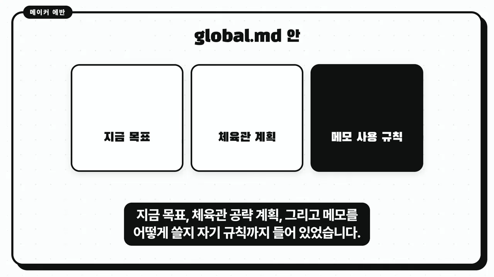
'직접 확인한 규칙'의 예가 있어요. 잉어킹에게 몬스터볼을 7번 연속 던졌는데 다 실패했어요. 그러자 이런 규칙을 적었어요.
볼이 세 번 이상 연속으로 실패하면 메뉴 조작 사이에 대기 입력을 넣어 타이밍을 바꿔라. 그렇게 하자마자 잡혔다.
— 영상 05:00
화면에 보이는 현상이 아니라 직접 시도해서 얻은 규칙이에요. Opus 5.5도 비슷하게 작은 폴더로 목표와 다음 단계만 관리했고, 게임을 끝까지 깼어요.
쓰는 법을 정해 주면 오히려 떨어져요
그러면 메모 쓰는 법을 프롬프트로 알려 주면 더 좋아질까요. 앤트로픽의 답은 메모가 무엇을 위한 건지는 알려 주되, 어떻게 쓸지는 알려 주지 말라는 거예요. CL-Bench에서 메모 폴더가 있다는 것만 알려 줘도 Opus 4.7과 Opus 5는 메모를 잘 썼고 점수가 확실히 올랐어요.
그다음 '실패만 기록하라' 같은 규칙을 하나씩 줘 봤어요. 아래 원문 그래프의 오른쪽 패널이 그 결과예요. 막대가 아래로 내려갈수록 메모로 얻던 이득을 잃었다는 뜻인데, Opus 5(주황)가 −0.234, Opus 4.7(노랑)이 −0.150으로 크게 내려갔어요.

예전 모델은 반대였어요. Sonnet 4.6은 메모 폴더를 잘 읽지도 않고, 세운 가설을 검증하지도 않았어요. 답하기 전에 메모를 읽고 가설을 검증하라고 시키자, 아래 막대처럼 점수가 0.36에서 0.64로 거의 두 배가 됐어요. Sonnet 5는 시키지 않아도 10번 중 9번은 답하기 전에 메모를 읽었고, Sonnet 4.6은 절반도 안 됐어요.
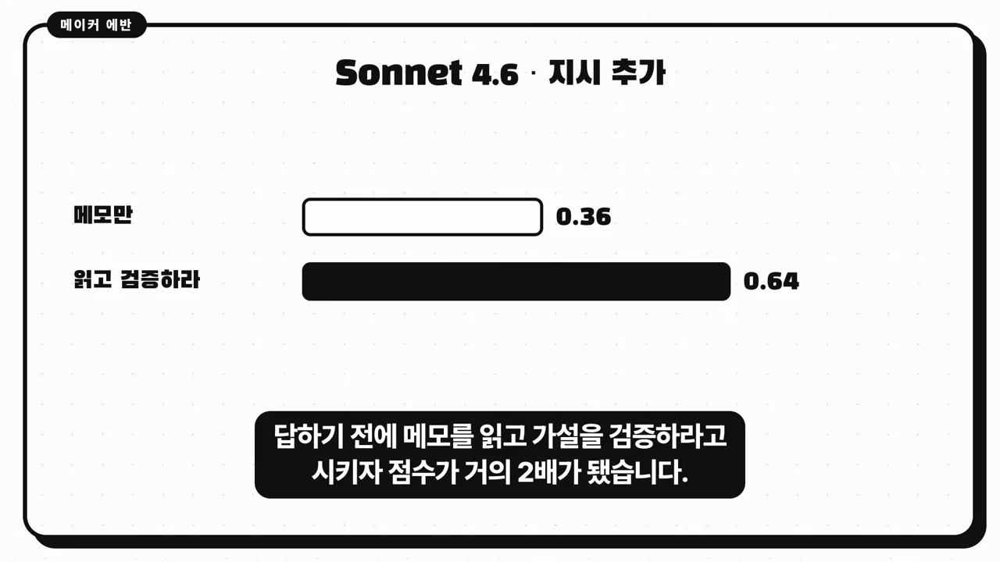
그래서 최신 모델에는 짧게만 말해요. 사용자가 기억하라고 하거나 확실히 기억할 가치가 있을 때 메모를 남기라고요. 나머지 판단은 모델에게 맡겨요.
드리밍: 쉬는 시간에 틀린 메모를 고쳐요
판단을 잘한다고 메모가 늘 맞는 건 아니에요. 작업 중에 적은 메모는 그 순간의 판단이라 처음부터 틀렸을 수 있어요. 환경이 바뀌면서 나중에 틀려지기도 하고요. 더 큰 문제는 다음 세션이 그 틀린 메모를 믿는다는 점이에요.
드리밍이 하는 일
여기서 나오는 게 드리밍이에요. Letta와 UC(University of California) 버클리 연구진이 제안한 수면 시간 연산이라는 개념이 바탕이에요. 작업과 작업 사이 쉬는 시간에 에이전트가 원래 대화 기록을 다시 읽어요. 그리고 슬라이드의 세 칸처럼 메모와 대조해 틀린 걸 고치고, 새 메모를 만들고, 구조를 다시 짜요.
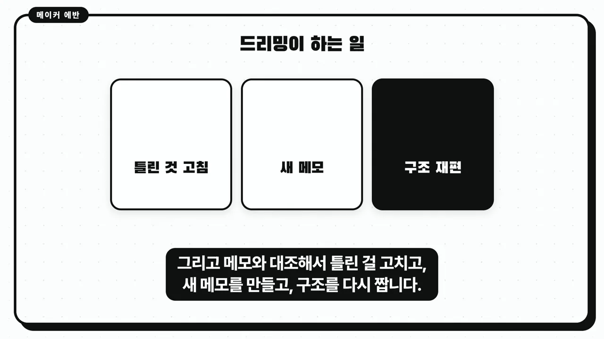
흐름을 한 장으로 그리면 이래요. 작업 중에는 대화 기록과 메모가 따로 쌓이고, 드리밍은 기록을 정답지로 삼아 메모를 검사해요.
flowchart TB A["작업 세션"] --> B["대화 기록 (그대로 남음)"] A --> C["메모 (그 순간의 판단)"] B --> D["쉬는 시간: 드리밍"] C --> D D --> E["틀린 메모 고침 · 새 메모 · 구조 재편"] E --> F["다음 세션이 읽음"]
달맞이산에서 생긴 일
실제 사례가 포켓몬에 나와요. 달맞이산 동굴은 입구가 서쪽, 출구가 동쪽이에요. 입구 근처에는 한 번 떨어지면 다시 올라갈 수 없는 일방통행 언덕이 있어요. 클로드는 산 입구의 포켓몬센터를 기준점으로 길을 찾고 있었는데, 메모에 센터가 동쪽에 있다고 잘못 적었어요.
그래서 센터에서 나오자마자 산을 이미 지나왔다고 선언하고, 메모를 '달맞이산 완료'로 고쳤어요. 아래 원문 그림 왼쪽 패널의 빨간 화살표가 그다음 움직임이에요. 몇 걸음 뒤 언덕에서 떨어져 왔던 길로 돌아갔어요.
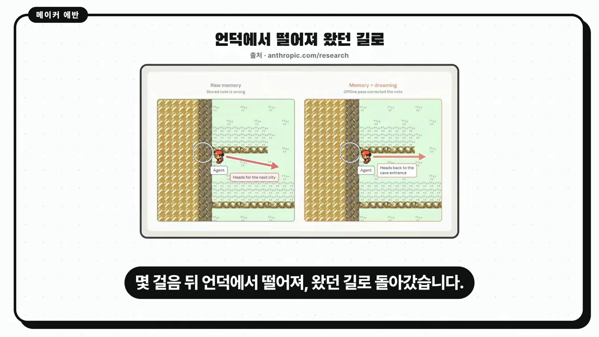
내비게이션 도구가 낭떠러지를 보여 주지 않아서, 클로드는 서쪽으로 너무 많이 왔다고 착각했어요. 그렇게 세 번 떨어졌어요. 세 번째에는 계속 반복하느니 멈추겠다고 적었어요. 자동 응답이 계속하라고 하자 산 앞 마을까지 되돌아갔고, 결국 다음 도시에 가지 못했어요.
앤트로픽은 이 틀린 메모가 든 폴더에 드리밍을 돌렸어요. 원래 세션 기록에는 실제로 어디서 무엇을 봤는지가 그대로 남아 있어요. 클로드는 그걸 기준으로 포켓몬센터 위치가 틀렸다는 걸 찾아 메모를 다시 썼어요. 고친 메모를 들고 다시 돌리자 "Now I need to find the cave entrance", 이제 동굴 입구를 다시 찾아야겠다고 말했어요. 그리고 곧장 동굴로 들어가 다음 도시인 블루시티에 도착했어요.
결과는 세 갈래예요. 아래 표에서 테두리를 친 오른쪽 칸만 산을 넘었어요.
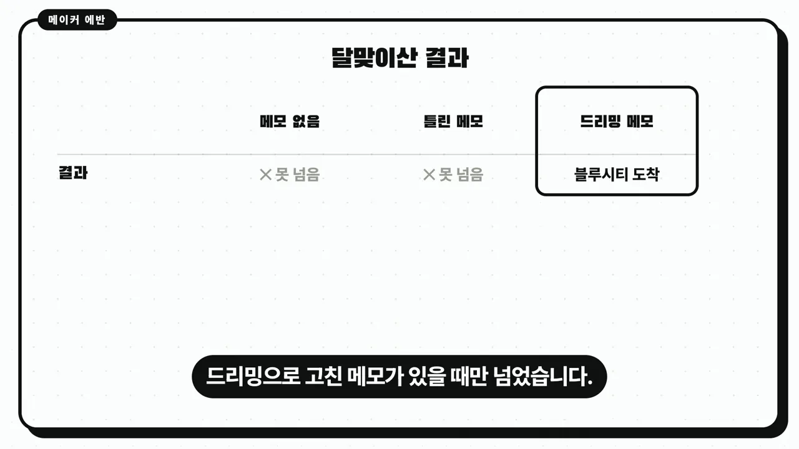
위키: 메모를 찾아가는 지도
드리밍은 고치기만 하지 않아요. 메모를 찾아가기 쉽게 새 구조를 만들기도 해요. 대표적인 게 위키예요. 주제 하나에 페이지 하나, 페이지끼리 링크로 연결된 구조예요.
4억 토큰짜리 문서로 만든 위키
앤트로픽은 5월에 인수한 Stainless라는 회사의 내부 문서로 시험했어요. 슬라이드의 두 막대처럼 파일 약 35만 개, 토큰으로 약 4억 2천만 개예요.
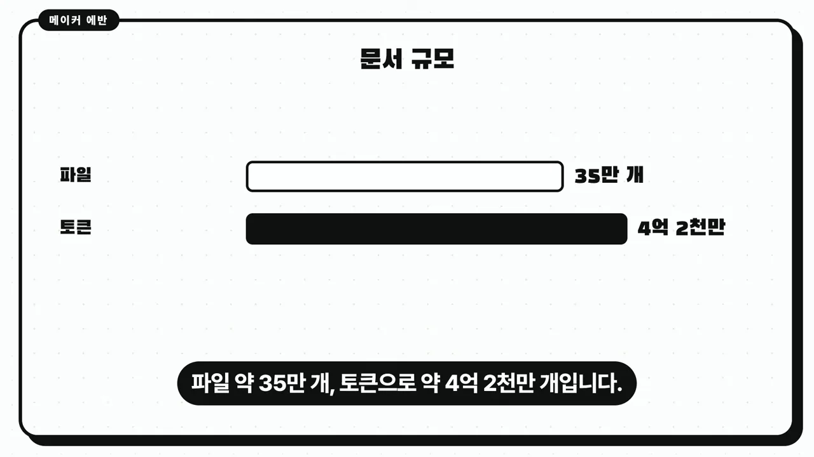
이 문서에 대한 질문 25개를 만들고, Opus 5 에이전트들이 128세션 동안 위키를 만들었어요. 세션마다 문서를 탐색하고, 페이지를 쓰거나 고치고, 중복을 합치고, 주장을 원문과 대조했어요.
아래 원문 그림 가운데 그래프에서 아래쪽 회색 선이 위키만으로 답한 점수예요. 2세션 13%에서 128세션 48%까지 올라요. 위쪽 주황 선은 검색과 위키를 같이 쓴 점수로 61%에 닿고, 그 아래 점선이 검색 도구만 쓴 53%예요. 양옆 그림은 2세션 뒤 위키(103페이지)와 128세션 뒤 위키(222페이지)의 모습이에요.
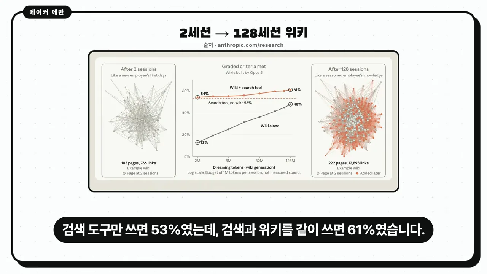
검색과 위키를 같이 쓰면 질문 하나당 토큰도 약 2만 개씩 아꼈어요. 여러 문서를 엮어야 하는 합병 질문에서는 차이가 더 컸어요. 위키를 쓰면 87%, 검색만 쓰면 73%였어요.
| 조건 | 점수 |
|---|---|
| 위키만 (2세션 → 128세션) | 13% → 48% |
| 검색 도구만 | 53% |
| 검색 + 위키 | 61% |
| 합병 질문: 검색만 / 위키 | 73% / 87% |
실패도 같이 공개했어요
법률 문서 과제 하나에서는 위키가 원본 문서보다 더 커졌어요. 아래 원문 그림 왼쪽 작은 원이 원본 문서, 오른쪽 큰 원이 거기서 만든 위키예요.
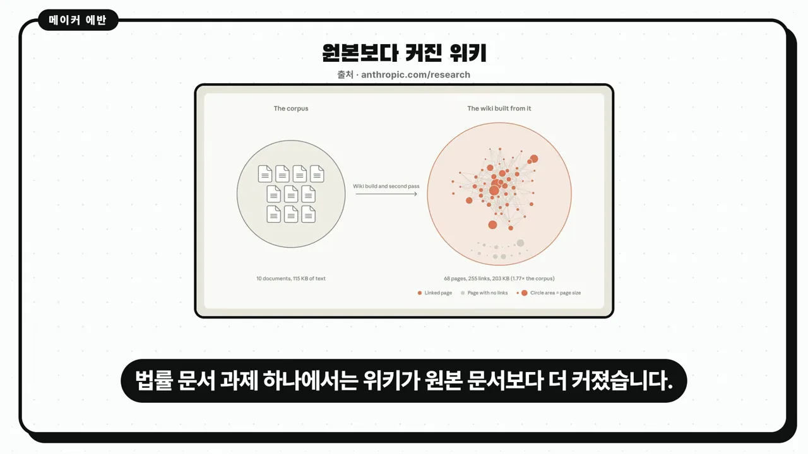
답이 문서 하나에 다 있는 과제에서도 위키는 검색보다 나을 게 없었어요. 위키는 여러 문서를 엮어야 할 때 값을 해요.
무엇을 위한 위키인지 알려 주면
위키가 목표를 알면 결과가 달라져요. 회사 인수 상황에서 계약서 묶음을 주고, 계약 조건을 정확히 정리하는 과제가 있었어요. 처음엔 위키 만드는 지침만 주고 무엇이 중요한지는 알려 주지 않았어요. 여러 에이전트가 계약 조건을 표 하나에 동시에 쓰면서 서로의 내용을 덮어썼고, 채점 기준 사실 57개 중 41개, 72%만 남았어요.
그래서 클로드에게 실패를 돌아보고, 지침을 고치고, 위키를 다시 만드는 과정을 반복시켰어요. 클로드가 찾아낸 답은 계약서 하나에 에이전트 하나, 페이지 하나였어요. 조건 문구는 요약하지 않고 그대로 인용하게 했고요. 아래 원문 그림 왼쪽이 공유 표 하나에 에이전트 넷이 몰려 쓰던 모습, 오른쪽이 계약서마다 페이지를 따로 둔 모습이에요. 맨 아래 칸이 41 of 57에서 All 57 of 57로 바뀌어요.
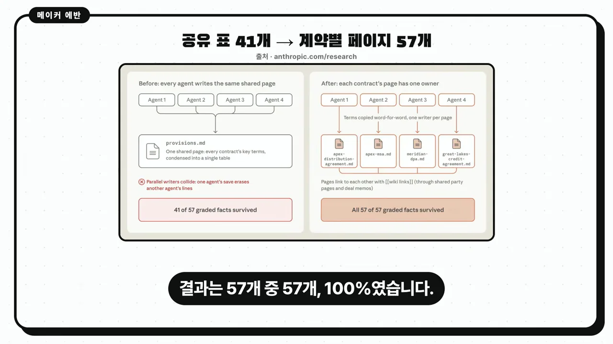
드리밍을 한 번 더 돌리면 빈 곳도 메워요. 없는 페이지를 가리키던 링크 9개를 실제 있는 페이지로 고치고, 색인을 포함한 페이지 3개를 새로 만들었어요.
MEMORY.md 200줄과 남은 숙제
이제 매일 쓰는 Claude Code 이야기예요. 드리밍은 메모를 맨 위층으로 끌어올리기도 해요. 맨 위층은 매 세션 시작할 때 자동으로 컨텍스트에 들어가는 층이에요. 클로드가 찾을 필요도 없고, 그런 게 있는지 몰라도 돼요.
맨 위층은 색인이에요
대신 조심해야 해요. 여기 들어간 건 매 세션 토큰을 써요. 틀린 메모가 들어가면 모든 세션이 틀린 걸 들고 시작해요. 넣는다고 따르는 것도 아니에요. Claude Code 문서에도 지시 파일이 길수록 지시를 따르는 비율이 떨어진다고 적혀 있어요. 그래서 Claude Code의 자동 메모리는 아래 표처럼 MEMORY.md의 처음 200줄, 또는 25KB까지만 불러와요.
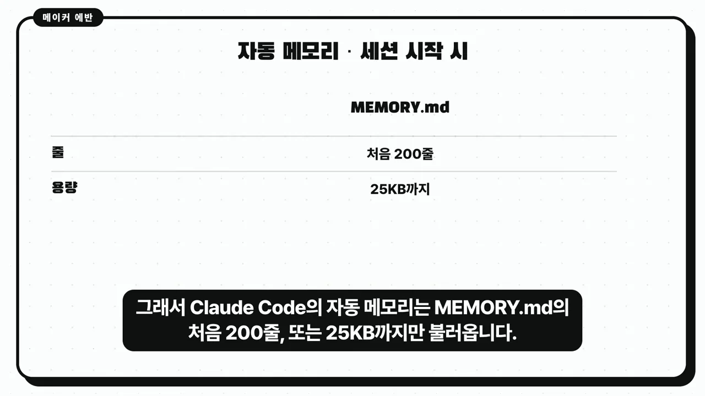
이 부분은 내용을 담는 곳이 아니라 색인이에요. 내가 무엇을 알고 있고, 자세한 건 어느 파일에 있는지만 적는 곳이에요. 발표자의 프로젝트 MEMORY.md도 지금 83줄인데, 한 줄이 파일 하나를 가리키는 링크예요. 자세한 내용은 아래 파일에 있고 필요할 때만 열어 봐요.
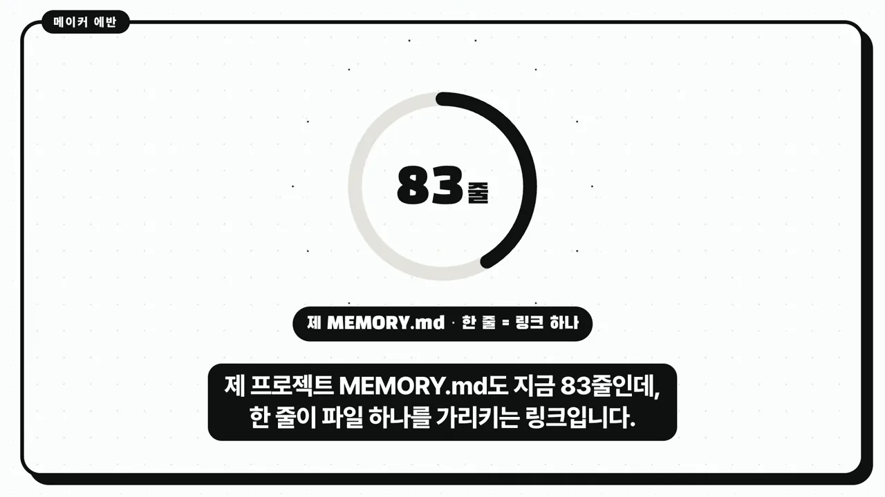
메모리를 층으로 보면 아래 슬라이드와 같아요. 맨 위 검은 칸 '매 세션 주입'이 작게 유지할 층이고, 그 아래로 위키·색인, 메모 노트, 대화 기록 원본이 깔려요. 드리밍이 하는 일의 큰 부분이 이 맨 위층을 작게 유지하는 거예요. 자세한 건 아래로 내리고 위에는 링크만 남겨요.

드리밍만 켜면 다 해결될까요
여기까지 들으면 드리밍만 켜면 될 것 같지만, 앤트로픽도 열린 문제를 같이 적었어요.
| 열린 문제 | 무엇이 걸리나요 |
|---|---|
| 언제 메모를 쓰나 | 작업 중에 쓰면 바로 다음 턴에 쓸 수 있지만 본업에서 주의가 빠져요. 드리밍으로 미루면 본업은 가볍지만 결과가 바로 반영되지 않아요 |
| 드리밍은 공짜가 아니에요 | 연산을 쓰니 모든 메모를 매번 검사할 수 없어요. 바뀔 가능성이 큰 정보만 고르거나, 얼마나 자주 읽히는지에 따라 주기를 정해야 해요 |
| 구조 유지비 | 위키 같은 구조도 관리하지 않으면 오류와 환각이 쌓여요. 그래서 대화 기록 검색 자체를 메모리의 기본으로 삼는 것도 합리적인 선택이라고 적었어요 |
무엇보다 어떤 모델도 다음 턴에 무슨 일이 생길지는 몰라요. 메모가 예측인 이상 틀릴 수 있고, 그래서 뒤돌아 고치는 시간이 필요해요.
정리
모든 걸 적은 Sonnet 3.7은 파일 413개에 배지 1개에서 멈췄어요. 화면에 없는 것만 적은 Fable 5는 파일 9개로 배지 4개를 땄고, Opus 5.5는 작은 메모 폴더로 게임을 끝냈어요. 틀린 메모 한 줄은 드리밍으로 원래 기록과 대조해 고쳤고, 그 한 줄로 산을 넘었어요. 4억 토큰짜리 문서도 위키와 검색을 같이 쓸 때 가장 잘 찾았어요. 그리고 매 세션 들어가는 맨 위층은 200줄짜리 색인으로 작게 유지해요.
컨텍스트 창을 얼마나 크게 쓰느냐보다 어느 층에 무엇을 둘지가 결과를 갈랐습니다.
— 영상 13:19
발표자는 Claude Code를 쓴다면 오늘 MEMORY.md부터 열어 보라고 권해요. 처음 200줄이 색인인지, 내용으로 꽉 차 있는지요.